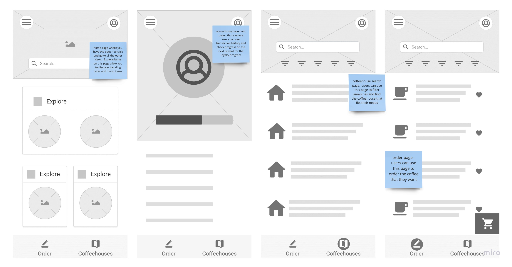

Research and design process of a digitally-enabled coffee shop experience. Project will be able to use an app (mobile or web-based) to perform actions such as:
| Role | Product Designer and Researcher |
|---|---|
| Tools | Figma, Miro, Zeplin, Lookback |
| Date | January 2020 - March 2020 |
| Course | Udacity User Design |
We began with a research plan and conducted semi-structured interviews to gather insights on drink-ordering behavior. This data was used to start our working sessions to create low fidelity product concepts for the drink-ordering app.

Key points were taken from the interviews and organized into themes and opportunity clusters on Miro


Data synthesized from interview insights was used to create potential features. We took this feature ideation and used a Value-Cost grid to plot and prioritize features. Features highlighted in blue were determined to be valuable and fit within scope.

We took the most valuable features and began to build out design concepts in a paper sketch

A digital wireframe was developed from the paper sketch
Low-fidelity prototype built upon first wireframe. Main requirements are identified on the sticky notes.
 click here for interactive prototypeWe identified essential tasks and conducted a functional usability test within the low fidelity prototype. The feedback was then presented in a flowchart to show successes and risks within the user flow task list.
We took feedback and insight from the testing phase to refine original designs. This new design was updated to improve success rate of the task flow.

After several iterations of the lo-fi mockup, we developed the first hi-fi mock up and continued to conduct additional tests.


We conducted live remote moderated usability tests with Lookback. This service features real-time remote user research - allowing direct communication with users as they go through the tasks.

We were able to analyze the data from participant studies and improve user work flow. The feedback allowed us to adjust the design to improve the success rate of an essential task.

idk
something interesting.